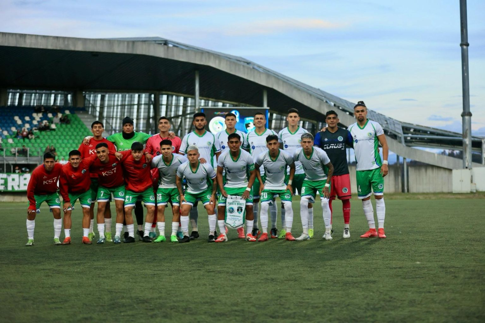

Con un triunfo debutó Deportes Puerto Montt en el campeonato 2025 de la Segunda División Profesional del fútbol chileno.
El cuadro sureño enfrentó al debutante en la categoría, Brujas de Salamanca, al que derrotó por 4 goles a 0.
El partido desde un inicio fue controlado por los dirigidos de Jaime Vera por sobre los oriundos de la Región de Coquimbo.
Al término del compromiso, el DT de los delfines realizó un positivo balance del desempeño de sus jugadores.
Los goles fueron anotados por Harold Antiñirre, Danilo Díaz, Luciano «Tiburón» Vásquez y Sebastián Pérez.
El encuentro se jugó antes más de 1.800 personas en el estadio Bicentenario Chinquihue.
En la próxima fecha, a disputarse este fin de semana, será otra vez de local, ante San Antonio Unido, a las 18 horas del sábado 8 de marzo.
Imágenes: Jorge Benítez Arias, @george_photographs67 @georgebacardi
